Envelope & HVAC
physics simulator
- Modelica → Julia port (
GreenhousesJL) - Walls, view factors, multi-bounce solar added
- Cross-validation against EnergyPlus 25.1
- 50–100× faster than OpenModelica / EP


PhD cotutelle · USMB ↔ UniGe · April 2026
A Julia greenhouse–crop–HVAC simulator, its EnergyPlus cross-validation, and a computer-vision pipeline for LAI tracking.
Melchior Duchaufour · ERMESS GREEN project · LOCIE / DIME
physics simulator
GreenhousesJL)VPL · PlantBiophysics · Vanthoor
YOLO + SAM 3 + tracking
Five layers compose into a runnable greenhouse simulation. Each layer depends only on the layer above. Reference: Altes-Buch et al. Modelica Conf. 2019.
(I−ρF)·J = ε·σ·T⁴ → qnet
hext = Bot(u,ϕ) / Walton(u)
VEC = 6.4·10⁻⁹·HEC
E = (Δ·Rn + ρ·cp·VPD/ra)/(λ(Δ+γ(1+rs/ra)))
Φ = f(Ap, ΔT, uwind)
An = f(PAR, Tcan, CO₂)
The original Modelica library was scoped for a Venlo glasshouse: roof + soil + canopy + air, no walls, no PV, no FSPM, slow solver.
Each step zooms onto the part that was changed and shows the new equation, with the term that did not exist in Modelica highlighted in colour.
The original library has zero wall area. The Julia rewrite adds 4 independent wall states with per-cardinal Fsky, interior LW exchange, and per-wall insulation.
Ck·dTwall,k/dt = Qcnv,air→k + Qrad,int,k (radiosity) − Qcnv,k→out − Qrad,k→sky − Qrad,k→grd
Each wall can be independently insulated:
insulate(walls, :N; U=0.4, thermal_mass=50000)
hBot = (2.8 + 1.2u) / cos(φ) u < 4 m/s
τ(θ) = τ0 · Fresnel(n=1.526)
Bot 1983: greenhouse glass roof (Wageningen). Walls: Walton h = 5.7 + 3.8u. Interior: Balemans h = 1.7|ΔT|0.33 + 1.
τ at normal: 85 %. At θ=75° (winter): ~50 %Tdeep = mean(Tout,TMY) at ≥ 10 m depth
Old: 3 °C constant at 1.3 m. Now: 8 exponential layers to 10 m, annual mean from EPW (Kusuda 1965).
Brussels 10.7 °C, Lyon 11.9 °C, Almeria 19.0 °Crs = 5000 s/m if PAR < 5
Night λE: 90 → 2 W/m². Stomata were left open at night (Stanghellini bug). Basil Qheat: 0 → 108 W/m².
Night transpiration: 90 → 2 W/m². Heating restored: 0 → 108 W/m²Ieff = [(1 − c) + c · τPV] · Iglob
Opaque (τ=0): full shade. Semi (τ=0.4): partial. Transparent (τ=0.65): max light. Panels sit on top of glass. Exterior: PV face (ε=0.90, +30% hext). Interior: glass unchanged.
Facade: roof, south_wall, north_wall. Waste heat → glass below.Tsit5 (5th-order adaptive RK) + JIT compilation + in-memory weather interpolation
Same equations, written directly in Julia and compiled once on first call. The OpenModelica path goes through Modelica → C → binary at every run.
7-day simulation: 250 ms (OMC) → 4 ms (Julia)Three terms heat the cover (Q_sol, Q_cnv,air, Q_rad,int), three cool it (Q_cnv,out, Q_rad,sky, Q_rad,grd).
The dominant night loss is radiation to the cold sky (~30 W/m²). Q_rad,int now uses the N-surface radiosity enclosure (floor + walls + cover coupled via view factors).
Qsol = αcov(θ) · Iglob · A
Glass absorbs ~3% of incoming solar. Fresnel angular correction (n=1.526) reduces τ at high incidence. PAR/NIR spectral split with multi-bounce redistribution.
Qcnv,air = hint · (Tair − Tcov) · A
Free convection inside the greenhouse (Balemans 1989). hint ≈ 1.7 · |ΔT|0.33 on the inclined cover.
(I − ρF)·J = ε·σ·T4 → qnet,cov
N-surface grey-body radiosity enclosure (floor, cover, 4 walls). Replaces the simplified floor→cover pair. Validated: cube 0.007% error, row sums = 1, energy conserved.
Qcnv,out = [(1−c)·hBot + c·hPV] · (Tcov − Tout) · A
Bot (1983) on bare glass, +30% roughness on PV-covered area. Tilted PV: wind-directional h (Sharples 1998) + cavity gap (Hollands 1976). See PV convection slide.
Qrad,sky = εeff·Fsky·σ·A·(Tcov4 − Tsky4)
Dominant night loss (~30 W/m²). With PV: εeff = (1−c)·0.84 + c·0.90. Tilted PV changes Fsky.
Fsky = (1+cosφ)/2 (Duffie & Beckman 2013). εglass = 0.84 (Vanthoor 2011). εPV = 0.90 (Faiman 2008).
Qrad,grd = εcov·(1−Fsky)·σ·A·(Tcov4 − Tout4)
Cover radiates IR downward to the ground. The original library lumped this into the sky term, overcooling tilted surfaces.
| Analytical | MC (100k) | Error | |
|---|---|---|---|
| Fij (off-diag) | 0.200 | 0.198±0.02 | <2% |
| qfloor (W) | 119.4 | 119.4 | 0.0% |
| Σ qnet | 0 | 0.9 | ~0 |
| View factor | MC (100k) | EP ScriptF | Match |
|---|---|---|---|
| F(floor→cover) | 0.417 | 0.404 | ~3% |
| F(floor→walls) | 0.583 | 0.596 | ~2% |
| Row sums | 1.000 | 1.000 | exact |
MC view factors match EP ScriptF to 3%. The old Hottel formula gave F(floor→cover)=0.245 → 40% too low. The MC engine uses exact 3D vertex geometry with auto-flipped normals.
The indoor air is the central hub of the model. It sees every other node, the floor, the cover, the walls, the canopy, the heater and the outside through ventilation.
Three terms heat the air (floor convection, solar through obstacles, heater), four cool it (cover, walls, canopy, ventilation).
Qcnv,flr = hflr · (Tflr − Tair) · A
Bidirectional Balemans 1989: hup = 1.7·|ΔT|0.33 when the floor is hotter than the air, hdown = 1.3·|ΔT|0.25 when it is colder.
Qsol,air = ηglob,air · Iglob · (τcov·ηPAR + (αcan+αflr)·ηNIR) · A
10 % of the incoming solar is absorbed by greenhouse construction obstacles (trusses, gutters, dust, internal pipes) and re-released as a sensible heat source to the air rather than reaching the floor.
Qheat = clip0..Qmax(Kp·e + Kp/Ti·∫e·dt)
Identical PI in OMC and EP, ideal continuous mode. Realistic mode adds dead band, part-load degradation and a startup ramp.
Qcnv,cov = hint · (Tair − Tcov) · A
Free convection on the inclined cover. hint = 1.7·|ΔT|0.33·cos(φ)−0.66.
Qcnv,wall = (1.7·|ΔT|0.33 + 1) · Awalls · (Tair − Twall)
The original Modelica library has zero wall area. For a small Savona greenhouse the walls are 60 % of the envelope and dominate the loss.
Savona bare: +0.5 °C bias vs EP (winter), wall-dominated envelopeQcan = ρcp/ra · LAI · (Tair − Tcan)
At night Tcan < Tair, so the air loses heat to the canopy. With dense crops this can save 15-20 % of the heating energy by buffering day-time gains.
Qvent = ρcp · fvent(U, ΔT, u) · (Tair − Tout) · A
Boulard & Baille 1995 natural ventilation model: combined buoyancy and wind effects, gated by a T+RH controller (Körner & Challa 2003).
Thin slab, low thermal mass. Absorbs PAR, transpires, radiates to cover.
Stomata gate λE: bug fix on rs changed basil heating from 0 to 108 W/m².
Qsol,can = PAR · 0.85 · (1 − e−K·LAI) + NIRmulti-layer
Beer-Lambert intercept on PAR plus the Modelica multi-layer NIR composition. K is the open question: in Modelica K_PAR = 0.7 and K_NIR = 0.27 are constants, but ceptometer measurements show K varies with growth stage and row geometry from ~0.45 to 0.71.
H = ρcp/ra · LAI · (Tcan − Tair)
Negative at night when Tcan < Tair: the canopy then receives heat from the air. Drives a 3 to 5 °C night depression below the air temperature.
λE = LAI · (Δ·Rn + ρcp·VPD/ra) / (Δ + γ(1 + rs/ra)) [W/m²]
rs = 5000 s/m below 5 µmol PAR (closed stomata at night), rs = rs0(1 + 200/(PAR+50)) during the day.
Basil λE night: 90 W/m² → 2 W/m²Qrad,can→cov = εcan·εcov·σ·A·(Tcan4 − Tcov4) · FF
FF = 1 − e−0.94·LAI is the canopy view factor. The cold cover at night drives this loss and creates the Tcan depression observed in greenhouses.
Three coupled vapor balances drive the humidity inside the greenhouse. Each component exchanges water vapor with the air node.
Whenever the cover sits below the dewpoint of the indoor air, vapor diffuses to the glass and condenses. The cover is the dominant vapor sink at night.
Two effects: a vapor flux out of the air (slide 14) and a latent-heat source on the cover energy balance (slide 10).
MVAirCov = VECAirCov · (Pv,air − Pv,cov)+
VECAirCov = 6.4 × 10−9 · HECAirCov (Bot 1983)
Saturation-pressure-driven diffusion. The Bot 1983 closure ties the vapor exchange coefficient to the convective heat exchange coefficient through a constant Lewis-number ratio. Active only when Pv,cov < Pv,air (cover under the dewpoint), positive part clipped to zero otherwise.
Qlat,cov = λvap · MVAirCov
Each kilogram of vapor that turns to liquid on the glass releases λvap ≈ 2.45 MJ of latent heat directly into the cover energy balance (slide 10). Typical magnitude: 10 to 25 W/m² on a winter night, the same order as the radiative loss to the sky.
Couples slide 10 (cover energy) and slide 14 (air vapor)The indoor air is the central node of the vapor balance, just as it was for energy. One source (canopy transpiration), four sinks (ventilation, top compartment, cover and screen condensation).
Driven by the difference between the air vapor pressure and the partner surface or volume.
MVCanAir = (λE)Stanghellini / λvap
The Stanghellini latent flux from slide 12, converted from W to kg/s by dividing by λvap ≈ 2.45 MJ/kg. Closes the loop between the canopy energy balance (latent cooling of the leaves) and the air vapor balance (vapor source).
MVAirOut = fvent(U, ΔT, u) · (Cv,air − Cv,out)
Same Boulard & Baille 1995 ventilation rate as the energy balance (slide 11), now applied to the vapor concentration difference. In daytime ventilation can carry away half the canopy transpiration before it reaches the cover.
MVAirTop = fscr(SC, ΔT) · (Cv,air · SC) · A
When the thermal screen is deployed, the air below it and the air above it become two separate vapor compartments. fscr follows the De Zwart 1996 leakage law and depends on the screen aperture SC.
MVAirCov = 6.4 × 10−9 · HECAirCov · (Pv,air − Pv,cov)+
Cover condensation, detailed on slide 13. The dominant vapor sink at night, around 10 to 25 W/m² of latent heat released on the cover.
MVAirScr = SC · 6.4 × 10−9 · HECAirScr · (Pv,air − Pv,scr)+
Same Bot 1983 form as the cover term, applied to the screen surface, weighted by the screen closure SC. Active when the screen sits below the air dewpoint, mostly under deployed energy screens.
Stanghellini 1987 is the Penman-Monteith equation rewritten for a greenhouse canopy. Three quantities decide how much vapor leaves the leaves: the available radiative energy, the aerodynamic resistance ra, and the stomatal resistance rs.
It is the same formula that drives the λE term on slide 12, divided by λvap to land in kg s−1.
Rn = RPAR,can + RNIR,can − Qrad,can→cov
The numerator is the sum of two driving forces: the net radiation Rn available at the leaf surface, and the air-side vapor demand ρcp·VPD/ra driven by the vapor pressure deficit. Δ is the slope of the saturation curve at Tcan.
ra from canopy aerodynamics, rs from Vialet-Chabrand / Medlyn
ra is the boundary-layer resistance around the leaf (small in well-ventilated greenhouses, ~100 s/m). rs is the stomatal resistance, dynamic in PlantBiophysics, fixed in the Modelica baseline. γ is the psychrometric constant.
MVCanAir = λE / λvap
Night-time rs fix: when PAR < 5 µmol m−2 s−1, rs is forced to 5000 s/m, which drastically increases the stomatal resistance and brings λE from 90 W/m² down to 2 W/m² on the LAI = 4 canopy.
Closes the loop with slide 14, term 1| Preset | fsub | fwet | A | B |
|---|---|---|---|---|
DryFloor() | 0 | – | – | – |
WetSoilFloor() | 0 | – | – | – |
TomatoOnRockwool() | 0.70 | 0.80 | 0.60 | 15 |
TomatoOnCoco() | 0.60 | 0.75 | 0.55 | 12 |
LettuceNFT() | 0.40 | 1.00 | 0.70 | 20 |
LettuceEbbFlow() | 0.50 | 0.60 | 0.50 | 10 |
| No evap. | Rockwool | Δ | |
| Tair mean | 25.5 °C | 24.6 °C | −0.8 °C |
| Tfloor mean | 32.9 °C | 28.1 °C | −4.8 °C |
| Water | — | 49.3 L/m² | 1.6 L/m²/day |
Baille et al. (1994) Sci. Hort. • Jolliet (1994) HORTITRANS • Katsoulas et al. (2002) • Seginer (1994)
Modelica defaults Tdeep = 3 °C at 1.3 m. Now: 8 exponential layers to 10 m, Tdeep = annual mean (Kusuda 1965), auto-computed from EPW.
sealed Lyon July (14 000 m²). 3 °C boundary steals 60–80 W/m².
Brussels: 10.7 °C, Lyon: 11.9 °C, Almeria: 19.0 °C.
Savona: 50 m² glass walls vs 25 m² floor. Modelica models only the roof.
Savona (60% walls) cannot be modelled. Envelope losses underestimated.
bare envelope bias vs EP (winter). Bot + Walton + Balemans + N-surface radiosity.
Stanghellini's rs kept stomata open at night (130–250 s/m). Bug surfaced on LAI = 4 canopy: phantom transpiration dominated air balance.
physically impossible λE. Qheat dropped to 0 W/m².
Stanghellini range (5–20 W/m²). Qheat back to 108 W/m².
htop = 1.3 · √(hforced² + hnat²)
hforced = hBot(u) · |cos(θwind)|0.6 / cos(φpanel)
Windward: full forced. Leeward: natural dominates. 1.3 = PV roughness factor.
Nu = 1 + 1.44·max(0, Ra·cosφ − 1708) + (Ra·sin 1.8φ)1/3 − 1
hcavity = Nu · kair / Hgap
Ra = g·β·ΔT·H³/(ν²)·Pr. Typical gap: 5–12 cm. At ΔT=5°C, gap=8cm: h ≈ 20 W/(m²K).
εext = (1−c)·0.84 + c·0.90
hext = (1−c)·hBot + c·htop
PV coverage c = 0–1. Exterior ε blended. Interior ε = 0.84 (glass underneath, unchanged). Tilt extra ≥ 0 (panels cannot tilt below roof slope).
Tcell = Tout + Iglob / (U0 + U1·u)
η(T) = ηSTC·[1 + β·(Tcell − 25)]
U0=25, U1=6.84. Waste heat Qpv = c·α·I − Pelec → conducted to glass below.
| Parameter | Unit | Venlo | Tunnel | Source |
|---|---|---|---|---|
| A1 (Cd) | [–] | 0.75 | 0.60 | Bot 1983, Tab. 3 |
| Cw | [–] | 0.09 | 0.12 | Tab. 1-2, R²=0.92 |
| ηroof | [–] | 0.10 | 0.20 | Aroof/Afloor |
| hvent | [m] | 0.68 | 1.20 | vertical opening |
| cleak | [m³/(m²·s)/(m/s)] | 1.5e-4 | 3e-4 | De Jong 1990 |
Warm air rises out through roof vents. Driven by ΔT = Tin − Tout. Dominates at V < 1.5 m/s.
Pressure fluctuations create two-way exchange through each vent. Cw lumps steady and turbulent wind pressure. Dominates at V > 2 m/s.
U = Kp · max(Tair − Ton, 0). Linear ramp from closed to fully open.
U = max(UT, URH). Opens vents when RH > 85% even if T is below setpoint. Prevents Botrytis & condensation. Costs +5-15% heating.
| Screen type | K | Material |
|---|---|---|
| TD 55 | 4.8e-4 | Knitted polyester |
| TD 85 | 3.7e-4 | Knitted polyester |
| LS 11 | 1.6e-4 | Film strip fabric |
| Tyvek gold | 2.4e-4 | Non-woven |
| Preset | ε [–] | Porosity [–] | Saving |
|---|---|---|---|
| StandardScreen | 0.30 | 0.05 | ~40% |
| EnergyScreen | 0.15 | 0.03 | ~60% |
| BlackoutScreen | 0.90 | 0.01 | light ctrl |
| NoScreen | 1.00 | 1.00 | – |
Phase-change material with hysteresis (paraffin floors, salt-hydrate walls). Latent buffer for day→night thermal shift. Coupled to floor energy balance.
Interior convection: Balemans (1989) free convection for greenhouse enclosures. Exterior: Bot (1983) forced convection on glass roofs. Both calibrated on greenhouses only.
No specific hconv for insulation panels (rock wool, XPS). Current model uses the same greenhouse glass correlations. Extending to insulated envelopes requires dedicated correlations (ISO 6946 or measured data).
Combined heat & power. Nominal ηel / ηth, start-up time constant. Electricity sold or self-consumed.
Second-law efficiency model: linear COP vs lift. Simple, 2 parameters.
Variable speed. CAPFT / EIRFT polynomial maps, part-load ratio curves.
Multi-cell 1-D stratified tank with internal/external heat exchanger. Buoyancy mixing between layers.
Controller dispatches CHP → HP → boiler in merit order. Screen deploy/retract by outside radiation threshold. All equipment can be mixed freely.
Kp=100, Ti=300 s. Holds Tair at setpoint ±0.01 °C. Maximum energy cost. Useful as reference baseline.
Setpoint 20 °C, dead band ±1 °C. Saves ~31% energy, only 10% growth penalty (Seginer 1991, Yin 1995).
Adapted per crop and growth phase (Heuvelink 1996, van Henten 1994).
| Tomato vegetative | 24 / 17 °C |
| Tomato flowering | 22 / 16 °C |
Thermal screen retracted when Iglob > threshold, deployed at night. Reduces radiative losses by 40-60%.
24h average matters more than instantaneous T for crop growth. Allow T to drift within a band and compensate later → exploit free solar gains.
All strategies are composable: PI loop + screen + day/night + ventilation RH override. Simulated over a full year to compare kWh/m².
CO2 < target AND vents <30% → inject at max rate. Simple, cheap, wastes CO2 when PAR is low.
Rate ∝ deficit from target. Smoother, less overshoot. Still a fixed target regardless of light or crop state.
Inject when marginal photosynthetic return > marginal cost. Couples PAR, CO2 response curve, and ventilation losses via instantaneous Hamiltonian maximization.
| On/off | CO2Enrichment(target, rate) |
| Proportional | CO2Config(enrichment=:proportional) |
| Economic | EconomicCO2(w_crop, w_co2, w_vent) |
Weight parameters wcrop, wco2, wvent are placeholders to be calibrated against experimental crop data or economic parameters (crop price, CO2 cost/kg).
| Crop | Reference | Specifics |
|---|---|---|
| Tomato | Vanthoor 2011 | 50-stage fruit, Tsum = 1035 °C·d |
| Lettuce | van Henten 1994 / Seginer 1991 | vegetative, Topt ≤ 22 °C |
| Cucumber | Marcelis 1994 | 30-stage fruit, faster growth coef. |
| Pepper / strawberry | generic source-sink | switchable parameters via record |
All crops share the same 3+3 interface: 3 inputs from the greenhouse (PAR, CO2, Tcan) and 3 outputs back (LAI, CO2 assimilation, dry matter yield). Swap species without touching envelope, HVAC, or controllers.
→ These models are static: a fixed source-sink with no organ-level resolution. They cannot capture PV-shading heterogeneity. Hence axis II.
EnergyPlus is the most widely audited building simulation engine in the world. It is not true, but it is independently true.
Cross-tool comparison surfaces issues that no single model can self-detect, including the ones I'll show next.
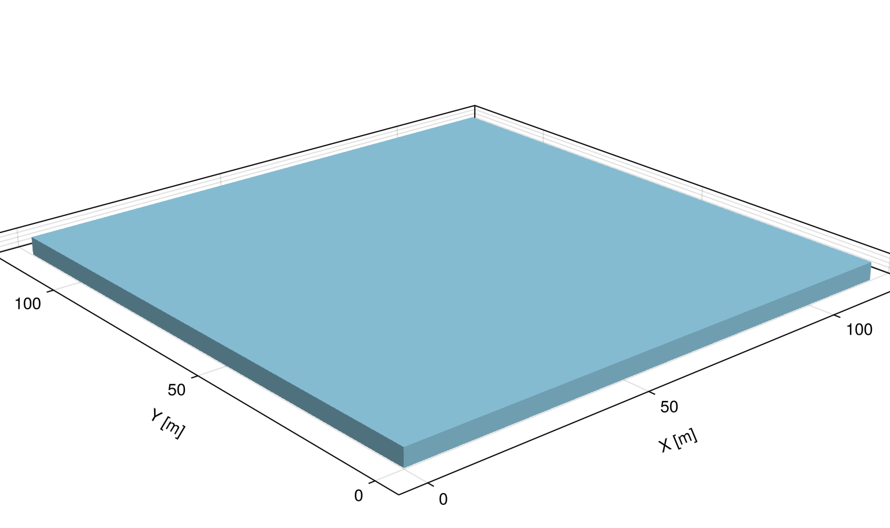

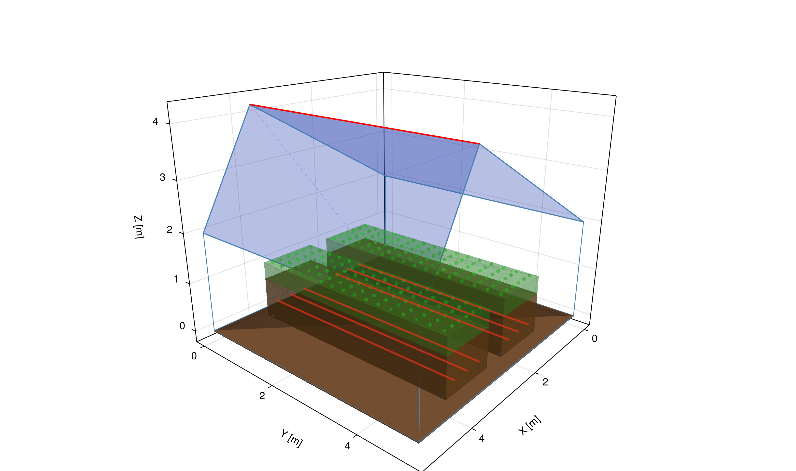
The bare 14 000 m² greenhouse drops 3.3 °C below outside temperature at night, a textbook radiative subcooling regime where the cover radiates to a cold sky much faster than convection can refill it.
| EP old (Tdeep=3 °C) | EP corrected (Tdeep=10.7 °C) | |
|---|---|---|
| Tair RMSE | 1.77 °C | 1.18 °C |
| Tair bias | +1.30 °C | −0.10 °C |
The original EP IDF used Tdeep = 3 °C (the same Modelica default from Impact 1). Correcting to the annual-mean 10.7 °C eliminates the bias entirely. The remaining 1.18 °C RMSE is from convection model differences (Bot+McAdams vs TARP) and sky temperature correlations.
→ Once Tdeep is matched, Julia and EP agree within 1.2 °C on a passive, unheated greenhouse with no tuning.
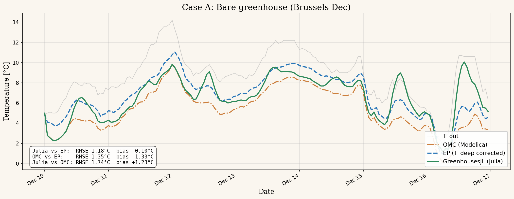
Tair Julia (green) vs EP (blue dashed) vs Tout (grey), 7-day Brussels December.
With identical PI controllers, both tools track the 16 °C setpoint. Julia uses an adaptive Tsit5 solver (continuous integration); EP discretises at Δt = 1 min.
| Julia | EP (corrected) | Δ | |
|---|---|---|---|
| Tair mean | 16.00 | 16.25 | −0.25 °C |
| Tair RMSE | 0.26 °C | bias −0.25 | |
| Qheat | 42.8 | 40.5 | +2.3 W/m² |
| Energy (7 d) | 7.20 | 6.80 | +5.8 % |
| Ueff | 6.1 | 5.5 | +0.6 W/(m²K) |
→ Sub-degree Tair, ~6 % energy gap on a fully-coupled control loop. Tdeep = 10.7 °C (annual mean at ≥ 10 m depth, Kusuda 1965 / Fossa 2023) has minimal effect on the heated case because the PI controller dominates.
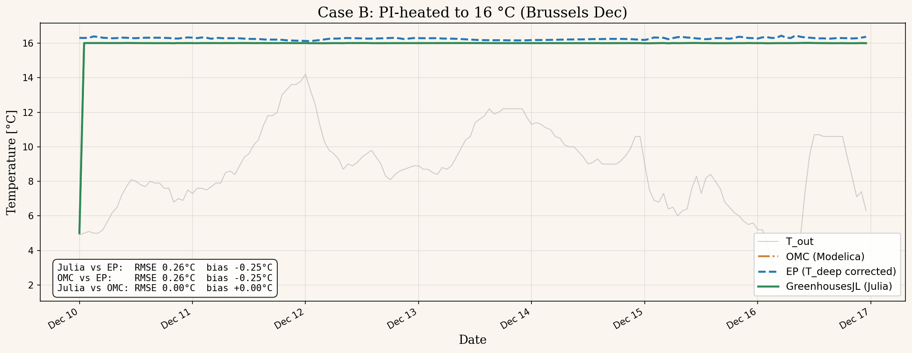
Tair Julia (green) vs EP (blue dashed), 16 °C setpoint, Brussels December.
The Savona 5×5 m benchmark (walls = 60% of envelope) triggered a systematic investigation of every physics term. Changes made:
| Fix | Impact |
|---|---|
EP glass: Material → WindowMaterial:Glazing | Solar enters zone (was zero) |
| Fresnel angular τ (n=1.526) | Winter τ correct at low sun |
View factor bug (vf_perp_rect A/B swap) | Row sums 1.43 → 1.00 |
| Geometric beam solar distribution | Dec Lyon bias −65% |
| MC geometry engine (vertex-based VF) | Matches EP ScriptF to 3% |
Root cause of remaining gap: EP uses ISO 15099 exterior convection on glass (h≈50 W/(m²K)) which cannot be overridden via EMS. Julia uses Bot 1983 (h≈7 W/(m²K)). The 7× ratio drives +0.5 °C winter → +4.3 °C summer bias. Confirmed by Martin & Monfet (2024): EP convection is “ill-suited” for CEA.
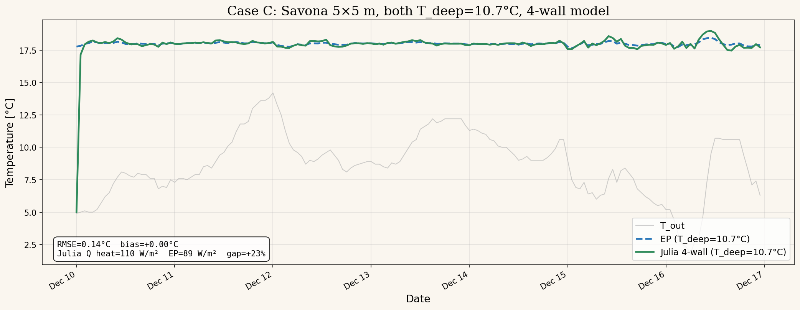
Full benchmark details in the dedicated benchmark presentation (25 slides).
With all fixes applied (glazing, Fresnel angular τ, radiosity VF, geometric beam, Kiva 10 m ground with Tdeep = annual mean), we compared the Savona 5×5 m bare envelope across 4 climates and 6 months. EP uses matched Bot+Walton+Balemans convection (EMS) where possible, but ISO 15099 remains on glass exterior (not overridable).
| Climate | Size | EP Tair mean / max | JL Tair mean / max | EP ΔT mean | JL ΔT mean | EP − JL |
|---|---|---|---|---|---|---|
| Lyon, FR | small (25 m²) | 35.6 / 56.6 | 37.0 / 58.9 | +13.7 | +15.1 | −1.4 °C |
| Lyon, FR | medium (1 000 m²) | 41.3 / 64.1 | 42.3 / 68.0 | +19.4 | +20.4 | −1.0 °C |
| Lyon, FR | large (14 000 m²) | 44.0 / 68.1 | 44.5 / 71.6 | +22.1 | +22.6 | −0.5 °C |
| Chambéry, FR | small | 31.9 / 54.5 | 33.6 / 54.1 | +13.0 | +14.7 | −1.7 °C |
| Chambéry, FR | medium | 36.2 / 60.7 | 38.6 / 63.7 | +17.3 | +19.7 | −2.4 °C |
| Chambéry, FR | large | 38.3 / 64.2 | 40.6 / 67.5 | +19.4 | +21.7 | −2.3 °C |
| Almería, ES | small | 40.6 / 55.8 | 41.5 / 57.0 | +14.7 | +15.5 | −0.8 °C |
| Almería, ES | medium | 44.9 / 63.5 | 47.9 / 68.2 | +19.0 | +21.9 | −2.9 °C |
| Almería, ES | large | 47.0 / 67.2 | 50.5 / 72.6 | +21.1 | +24.5 | −3.4 °C |
Winter bias: +0.5 °C (Lyon Dec, best agreement). Summer bias: +4.3 °C (Lyon Jul, worst). The seasonal scaling is entirely explained by the 7× exterior h difference on glass (Bot 7 vs ISO 15099 ~50 W/(m²K)) × the solar-driven ΔTcov. Multi-bounce adds 0.2–1.1 °C seasonally (real physics, not a bug).
vf_perp_rect returned F21 not F12Cross-validation exposed six fixable bugs (glazing, ground, angular τ, view factors, solar distribution, radiosity) and one irreducible architectural difference (EP fenestration exterior convection). Full analysis: 25-slide benchmark presentation.
Vanthoor's source-sink model treats the canopy as a single well-mixed compartment with one LAI value. That works for a flat horizontal layer of homogeneous shading.
Once you put PV panels above the rows, the assumption breaks: some leaves see direct PAR, others sit under a moving shadow, and the time constants of stomata interfere with the time constants of the shading pattern. A spatially-explicit FSPM is needed to quantify the bias, then the result is baked into the source-sink for production runs.
A virtual-forest VPL tutorial was adapted with a 10 × 10 m solar panel (30° tilt, 3.5 m above the ground, ρ = 0.10). 100 simulated days, with and without the panel, on the same weather and same plant population.
| Metric | No panel | With panel | Δ |
|---|---|---|---|
| Mean PAR intercepted | ref | −26 % | −26 % |
| Total biomass at D100 | ref | −22 % | −22 % |
| Run time | ~3 min / 100 days | VPL Monte Carlo | |
The PAR drop translates almost linearly to biomass at this stage, consistent with the linear PAR-use efficiency of young tomato canopies before flowering. At reproductive stages the coupling becomes non-linear (sink limitation, fruit pruning).
→ Provides per-leaf PAR fields the simplified model cannot generate on its own.
Level 1 simulates a few seasons under representative weather and PV configurations, producing reference (LAI, An, Tr, biomass) trajectories. Level 2 inherits four interface variables , q̇PAR,Can, TCan, ṁv,CanAir, ṁc,Can , whose response curves are fitted to L1. Once fitted, L2 runs at the speed required for control optimisation.
Inspired by Rémi Vezy's PlantBiophysics.jl architecture and the discussions with the CIRAD/CEA team (PhD Corentin Coutellier).
| Coupling variable | Meaning | Why Level 1 must compute it |
|---|---|---|
| q̇PAR,Can | PAR absorbed by the canopy [W/m²floor] | Affected by 3D PV shading geometry, not by a single k. |
| TCan | Mean leaf temperature [°C] | Result of leaf-level energy balance with cover/screen IR, not a canopy-averaged Stanghellini. |
| ṁv,CanAir | Vapour flux from crop to air [kg/(m² s)] | Heterogeneous stomatal aperture under PV flicker, lagging by 5–30 min (Vialet-Chabrand 2013). |
| ṁc,Can | Net CO₂ assimilation [µmol/(m² s)] | Per-leaf FvCB integrated over the actual PAR field, not over a homogeneous LAI layer. |
Once Level 1 has produced response surfaces for these four variables on a reference grid (LAI, Tair, RH, CO₂, PV-shading-fraction), Level 2 plugs them in as look-up corrections on top of the standard Vanthoor equations, preserving its second-per-season runtime.
PlantBiophysics.jl ships with the Monteith (2013) energy balance, formulated for an open-field canopy. In a covered greenhouse it systematically over-estimates evaporative demand because it ignores:
Stanghellini (1987) was developed precisely for greenhouse conditions and does the right thing.
Tr = ((Rn − G)·Δ + ρa·cp·δe / ra) / (λ·(Δ + γ·(1 + rs/ra)))
→ Drop-in replacement: same Medlyn rs, swap the energy balance only.
The Modelica library hardcodes K_PAR = 0.7 and K_NIR = 0.27 for every species and every growth stage. Published measurements show K varies by a factor of 4.
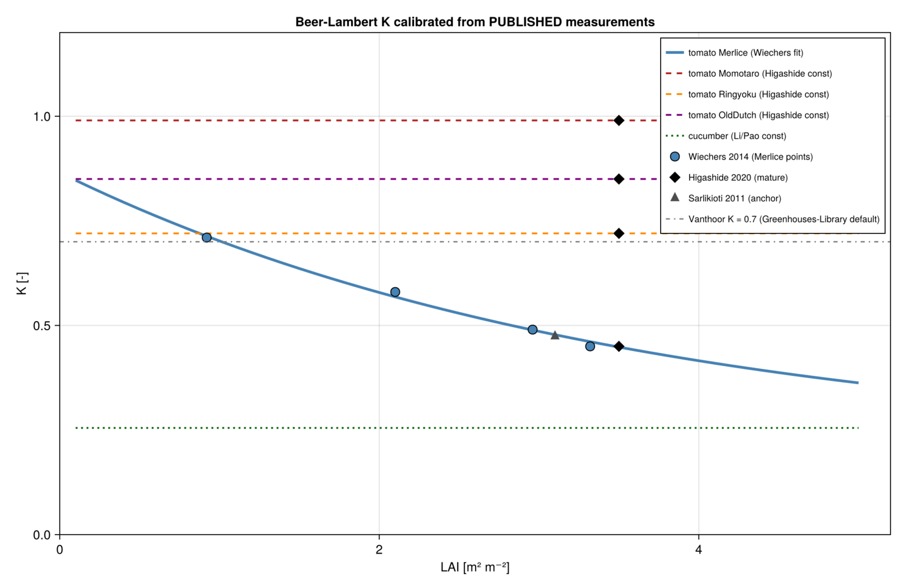
First attempt: build a vtc Merlice tomato FSPM in Julia and ray-trace its 3D geometry, replacing each compound leaf by an elliptical envelope with effective τ.
Aenv = Amax/fmature, f(t) = leaf.area / Aenv, τeff = (1−f) + f·τleaflet, ρeff = f·ρleaflet
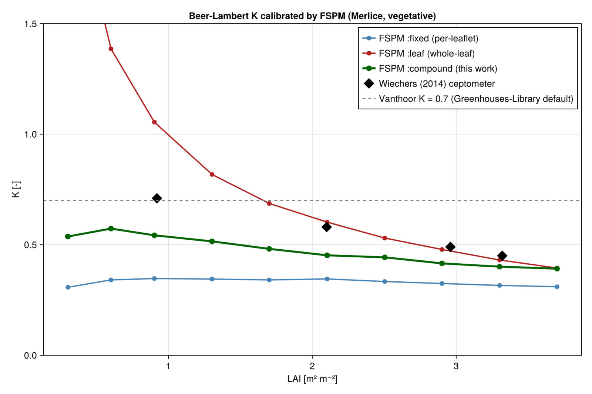
The FSPM compound mode is honest but still wobbles on cultivars it cannot resolve. Pivot: drop the FSPM as the source of K and fit it directly from the published measurements.
K(LAI) = K∞ + (K0−K∞)·exp(−α·LAI)
= 0.20 + 0.665·exp(−0.282·LAI), RMSE = 0.008 on 4 points
The cells show RVanthoor − RPublished at Iglob = 800 W/m² (Rt,PAR ≈ 306 W/m²). Negative = Vanthoor under-estimates the canopy gain; positive = it over-estimates.
| Cultivar | Kpublished | LAI = 1 | LAI = 2 | LAI = 3 | Worst case |
|---|---|---|---|---|---|
| Cucumber (Li/Pao) | 0.255 const | +80.7 | +99.6 | +94.8 | +100 W/m² |
| Tomato Momotaro (Higashide) | 0.99 const, planophile | −35.2 | −29.6 | −19.1 | −35 W/m² |
| Tomato OldDutch (Higashide) | 0.85 const | −19.6 | −17.5 | −11.9 | −20 W/m² |
| Tomato Merlice (Wiechers fit) | 0.20 + 0.67e−0.28·LAI | −0.3 | +18.7 | +30.0 | +30 W/m² |
| Tomato Ringyoku (Higashide) | 0.72 const | −2.8 | −2.7 | −1.9 | −3 W/m² |
For a 1 000 m² greenhouse this means a few kW (Ringyoku) up to ~100 kW of misallocated solar gain (cucumber), straight into the energy balance and the heating demand.
The FSPM lives in src/tomato_fspm.jl, calibrated on
de Visser 2014 vtc parameters and Sarlikioti 2011 measurements
on cv. Komeett.
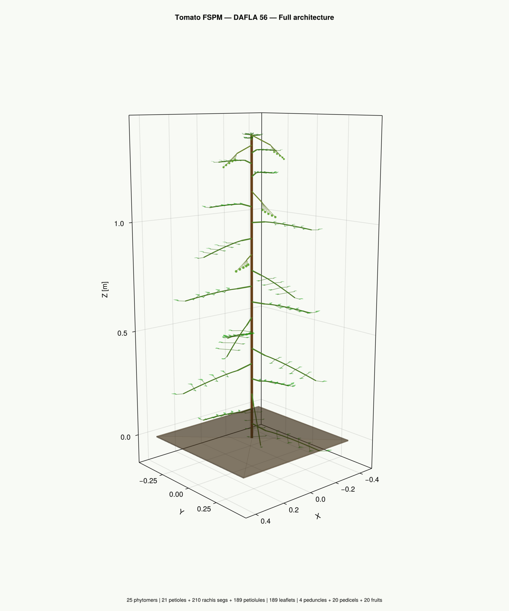
| θ | phyllotaxis angle | 4π/5 = 144° |
| β | leaf insertion angle | π/3 = 60° |
| LStem | internode length (rank-dep) | 3–7 cm |
| LLeaf | total leaf length | 30–45 cm |
| nLeaflet | leaflets per compound leaf | 6–9 |
| LLeaflet | leaflet length (terminal) | 5–13 cm |
| WLeaflet / LLeaflet | aspect ratio (ovate) | 0.50 |
| RPLeaflet,W | relative position max width | 0.15 |
| LRachis,inter | rachis internode length | 4–6 cm |
| SLA | specific leaf area | 276–350 cm²/g |
| phyllochron | °C·d / phytomer | 37.9 |
Schematic and parameter set inspired by Najla et al. 2009 (Botany 87, Fig. 1) and Sarlikioti et al. 2011 (Annals of Botany 107, cv. Komeett); cultivar values read from de Visser 2014 vtc Merlice.
| Pair 1–2 | basal, closest to the stem | 32–33° |
| Pair 3–4 | ... | 27–30° |
| Pair 5–6 | middle of rachis | 23–25° |
| Pair 7–8 | ... | 17–18° |
| Pair 9–10 | distal | 12–13° |
| Pair 11–12 | just before terminal | 6–7° |
| Terminal | tip of the rachis | 0° |
A constant leaf angle (CONST) under-estimates light interception in the middle canopy by 16 % under diffuse light and 7 % under direct light compared to the explicit-angle model (EXPL) of Sarlikioti.
The total canopy interception is the same to within 1 %, but the vertical PAR profile is wrong. That is the bias a single Beer-Lambert K hides.
If the FSPM passes this test for several cultivars, the per-leaflet PAR distribution it produces is trustworthy enough to drive the calibration of the simplified Vanthoor crop model.
72 directional sources (Spitters cosine-weighted) over a BVH-accelerated Monte Carlo, 500 k rays per snapshot.
→ A single calibrated K recovers the mean, but only the per-leaflet PAR field can tell a planophile cultivar from a Merlice with the same LAI.
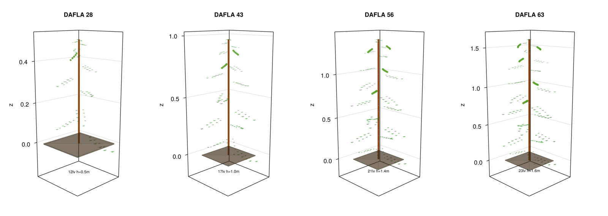
Run in vegetative-only mode (n_initial_veg = 10 000): the fruits/trusses branch is still rough, so calibration tables are generated on the branch where the FSPM is in its zone of confidence.
src/compound_leaf.jl: compound-leaf envelope mode for the BVH ray-tracer.src/published_K.jl: K(LAI) for 5 cultivars + cucumber, fitted from raw CSVs in data/published/.data/calibration/: 11 CSV tables (FSPM, published, comparison) ready for GreenhousesJL or Modelica injection.scripts/compare_BL_models.jl: produces the W/m² comparison table on demand.CombiTable2D in Solar_model.mo (low priority: Modelica is the baseline, not the integration target).Calibrating Level 1 against Level 2 needs ground truth. The 4th Wageningen Plant Growth Challenge published a public dataset of cherry tomato grown in six high-tech greenhouse compartments at Bleiswijk, with sensors and zenithal RGB cameras at 5-min intervals.
Reference: Hemming et al., Sensors 2020, "Cherry Tomato Production in Intelligent Greenhouses". Six teams, six months of cropping, hourly photosynthesis rates from a calibrated KASPRO + INTKAM digital twin.
→ If we can extract LAI from cam_19 RGB frames, we have
one of the cleanest validation targets in the field.
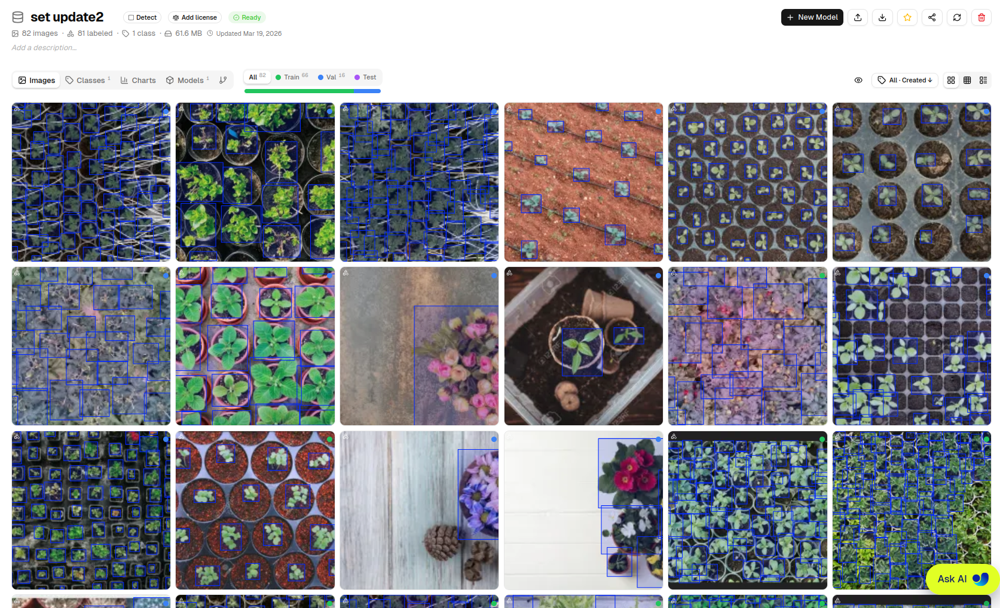
Set update2 on Ultralytics Hub: 82 labelled images, 1 class
(plant). Iterative annotation targeting underrepresented difficult cases.
YOLO 26x via Ultralytics Deploy.
Re-projection of API boxes to full-resolution image, NMS, padded crops,
*_detections.json.
SAM 3 with text prompts
("potted plant", "seedling", "plant").
Two-pass mask selection + morphological closing for pipe-split plants.
Centroid association across timestamps (max 150 px), per-plant CSV, mean and zone-wise growth curves, anomaly flags (drop > 40 % between two frames).
FastAPI webapp: encrypted login, API key vault, per-image visualisation, Pl@ntNet identification, daily quota tracking.
Each module produces a JSON contract with the next, so any one can be swapped (e.g. SAM 2 box-prompted instead of SAM 3 text-prompted) without touching the rest of the chain.
cam_19 zenithal RGB, 5-min cadenceFive fine-tuning experiments on the Ultralytics Cloud, each at 1280 × 1280 px. Two levers explained the improvements: model capacity and dataset enrichment.
| Run | Model | Dataset | mAP50 | mAP50-95 |
|---|---|---|---|---|
| exp-14 | yolo26n | set1 | 92.3 % | 58.2 % |
| exp-15 | yolo26n | set1 | 92.3 % | 58.2 % |
| exp-16 | yolo26l | set1 | 91.2 % | 57.5 % |
| exp-17 | yolo26x | set2 | 94.4 % | 62.3 % |
| exp-18 | yolo26x | set2 | 95.2 % | 64.0 % |
→ A bigger model alone is not enough, recall dropped from 85.9 % to 84.3 % between exp-15 and exp-16 because the dataset was not yet diverse enough to feed the larger model. Continuous dataset enrichment is the main lever.
The 82 labelled images contain greenhouses ranging from sparse pot trays to dense canopies of dozens of plants per frame, with irrigation pipes, labels, varied substrates, and senescent foliage.
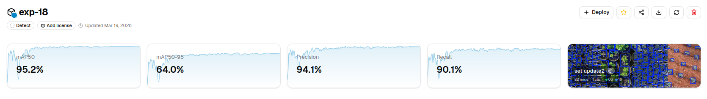
Validation metrics across runs. Dashed line marks the dataset-update step that explains the jump between exp-16 and exp-17.
SAM 3 (Meta, 2024) is used in semantic mode via Ultralytics'
SAM3SemanticPredictor. Three text prompts are submitted at
once and a two-pass selection picks the mask that best covers the
YOLO-detected plant centre, then a morphological closing repairs masks
split by visible irrigation pipes.
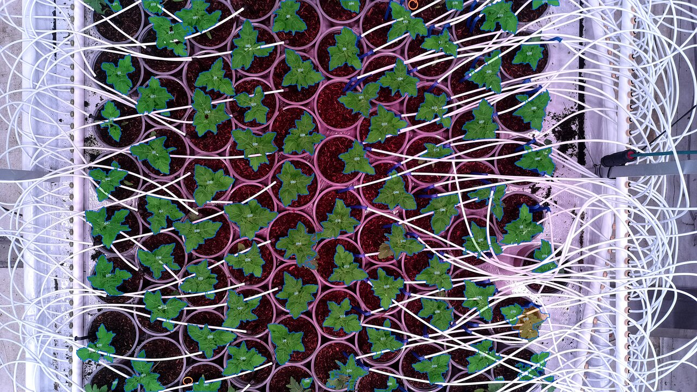
Day 1, initial overlays per detected plant.
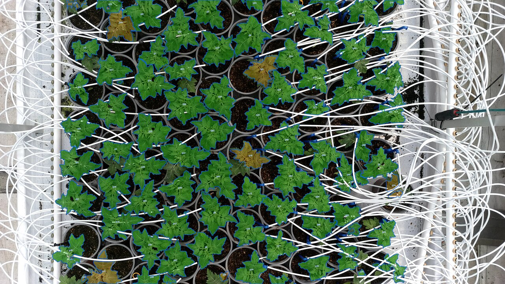
Day 4, same scene, growth visible per plant.
Blue contours faithfully delineate leaf areas even under high density and partial occlusion by irrigation pipes. Overlap resolution assigns shared pixels to the closest centroid, not perfect for fully entangled neighbours, which is the open-loop bottleneck before mass calibration.
Known limitation: senescent (yellow/brown) plants respond less well to green-oriented text prompts. SAM 2 (box-prompted, fine-tunable) is the planned upgrade.
Four days of cam_19 (4 frames per day, 02:00 / 08:00 /
12:00 / 16:00), 78 plants per image, tracked by centroid proximity.
Output: per-plant area in pixels and (once a px/cm reference is fixed)
in cm². Mean curve, zone breakdown (3 × 2 grid), anomaly flags.
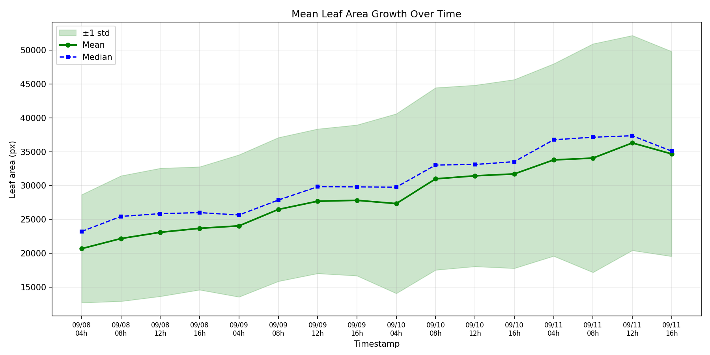
Mean leaf area per plant across 4 days, all 78 tracked plants pooled.
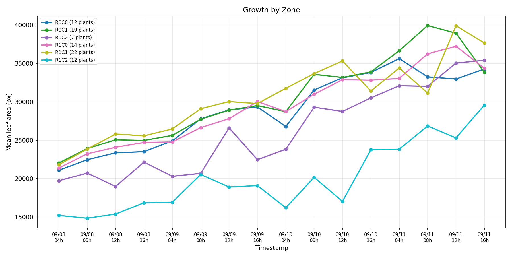
Growth split by 3 × 2 zone, reveals bench-side heterogeneity.
A FastAPI frontend for the YOLO + SAM + tracking pipeline.
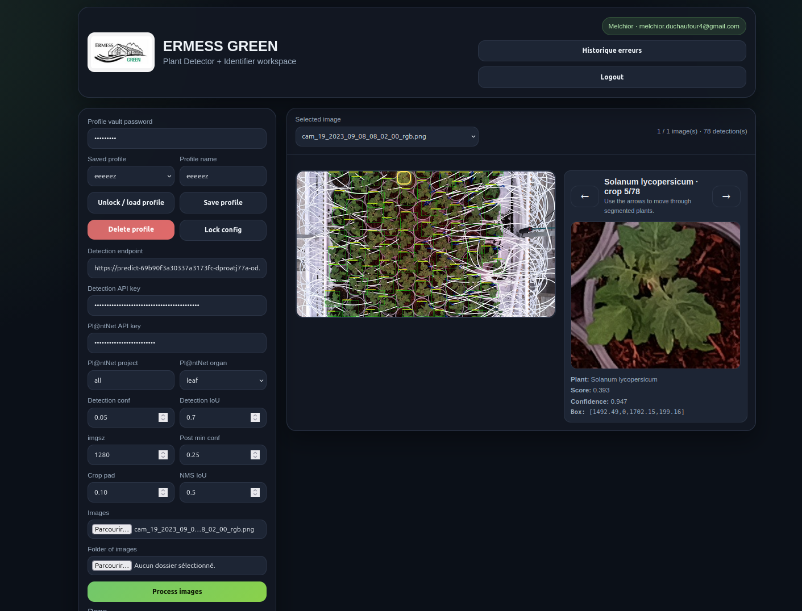
Every code block runs end-to-end at build time. The site can never drift from the library.
src/)GreenhousesJL.jl : main ODE system (greenhouse_rhs!)wall_model.jl : 4 cardinal walls + insulate()radiosity.jl : enclosure LW (6×6 view factors, multi-bounce)heating_systems.jl : CHP, heat pump, boiler, GCHPventilation.jl : Boulard & Baille + Körner T+RHcrop_climate.jl : productivity index, dynamic setpointssoil_library.jl : soil types, Kusuda Tdeepco2_model.jl : CO&sub2; mass balance + enrichmenttomato_fspm.jl : VPL tomato architecture (FSPM)scripts/ : benchmark (3 cases), K calibration, FSPM visualizationdocs/ : 20 tutorials + 4 theory pages (Documenter.jl)weather/ : EPW files (Brussels, Lyon, Almería, Chambéry)data/ : K calibration CSVs, published Wiechers/Higashide/Libenchmark_heating/ : 6 heating systems × EP comparisonbenchmark_ventilation/ : 9-case sweep (3 sizes × 3 climates)SAM_detect/ : YOLO + SAM3 vision pipelinewebapp/ : ERMESS GREEN FastAPI frontendexamples_pv/ : VPL 3D renders, PV scenarios26 source files · 20 tutorials · 27 validation points
using GreenhousesJL, OrdinaryDiffEqTsit5 # 1. Load weather tmy = load_tmy("weather/brussels.txt") # 2. Build parameters p = GreenhouseParams(tmy; A=14000.0) # 3. Initial state + solve u0 = initial_state(p; T0=278.15) sol = solve( ODEProblem(greenhouse_rhs!, u0, (0.0, 604800.0), p), Tsit5(); saveat=3600.0) # 4. Read results T_air = sol[2,:] .- 273.15 # °C
# Glass walls w = GlassWalls(; L=15.3, W=9.9, h_gutter=3.5) # Insulate the north wall w = insulate(w, :N; U=0.4, thermal_mass=50000.0) # Build with PI heating p = GreenhouseParams(tmy; A=151.5, Kp=100.0*151.5, T_sp=289.15, # 16 °C Q_max=200.0*151.5, A_walls=1.0) # triggers walls # 4 ms to simulate 7 days
→ Swap insulate(w, :N) to insulate(w, :all)
or insulate(w, [:N, :E]) to test any insulation scenario.
GlassWalls() + insulate()
Full documentation:
xdg-open docs/build/index.html — 20 tutorials, 4 theory pages,
API reference. All parameters have defaults, override only what you need.
Where should I push first?
A browser-based front end on top of GreenhousesJL, for growers who don't write Julia.
The 3-5 ms per 7-day simulation makes it possible to host the solver on a small server and answer "what if I change my setpoint?" in interactive time. The same equations validated against EnergyPlus, but exposed through a few sliders and three plots.
greenhouse_rhs! kernel used in this talk.The Julia speed advantage is what makes this possible: a 7-day simulation in 4 ms means a year of simulation in ~210 ms, fast enough to react to a slider drag in real time without queueing.
After correcting Tdeep (3 → 10.7 °C), the residual RMSE is 1.18 °C with near-zero bias. Four independent sources explain it.
Budget: √(0.3² + 0.7² + 0.7² + 0.3²) ≈ 1.1 °C — measured RMSE = 1.18 °C (close)
Julia + walls gives Qheat = 106 W/m² vs EP 94 W/m²: a +12 W/m² residual. The gap is a net residual of large compensating terms, not a single dominant error.
Net residual: +23 % (110 vs 89 W/m²). The two models use different convection correlations calibrated for different surface types: Bot 1983 (greenhouse saw-tooth glass, Wageningen) vs TARP (office buildings, DOE). On a small greenhouse where walls are 60 % of the envelope, this difference is amplified. On a 14 000 m² Venlo (walls < 3 %), the gap vanishes (< 6 %). Neither model is "wrong": Bot is the standard in greenhouse science (also used by GreenLight, Vanthoor, de Zwart), TARP is the standard in building science.
The Farquhar, von Caemmerer & Berry (1980) model computes net CO&sub2; assimilation An as the minimum of two limiting rates.
Ac = Vcmax · (Ci − Γ*) / (Ci + Kc(1 + O/Ko))
Aj = J · (Ci − Γ*) / (4Ci + 8Γ*)
An = min(Ac, Aj) − Rd
| Variable | From | To |
|---|---|---|
| PAR | Solar model (Beer-Lambert) | J (electron transport) |
| Tcan | Canopy energy balance | Vcmax, Jmax, Γ* |
| CO&sub2; | Air CO&sub2; balance | Ci via gs |
| An | FvCB output | CO&sub2; sink, dry matter growth |
| gs | Medlyn (2011) / Vialet-Chabrand | λE (Stanghellini) |
In GreenhousesJL, the Vanthoor crop model uses a simplified photosynthesis function, not the full FvCB. The Level 1 pipeline (VPL + PlantBiophysics.jl) runs the full FvCB per leaf, producing the reference data that calibrates Level 2.
→ FvCB is non-linear in PAR: the mean PAR gives a different An than the mean of An(PAR per leaf). This is why per-leaflet PAR from the FSPM matters for accurate canopy photosynthesis.
Farquhar, von Caemmerer & Berry (1980), Planta 149, 78–90. Medlyn et al. (2011), Global Change Biology 17, 2134–2144.